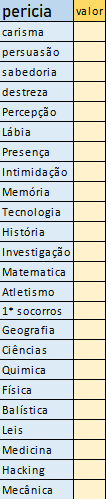
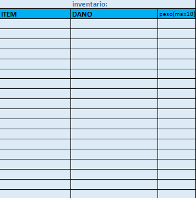

𝘾𝙍𝙄𝘼ÇÃ𝙊 𝘿𝙀 𝙋𝙀𝙍𝙎𝙊𝙉𝘼𝙂𝙀𝙈: Todos novo personagem começa com 0 de Level e 𝟏𝐃𝟒 pra cada atributos (𝐕𝐢𝐠𝐨𝐫, 𝐕𝐞𝐥𝐨𝐜𝐢𝐝𝐚𝐝𝐞, 𝐑𝐞𝐬𝐢𝐬𝐭ê𝐧𝐜𝐢𝐚, 𝐈𝐧𝐭𝐞𝐥𝐞𝐜𝐭𝐨, 𝐅𝐨𝐫ç𝐚 𝐞 𝐏𝐫𝐞𝐬𝐞𝐧ç𝐚.) depois o jogador tem 𝟑 𝐩𝐨𝐧𝐭𝐨𝐬 a mais para espalhar entre os seis atributos, podendo também retirar um ponto de algum atributo, ficando assim com um ponto a mais para adicionar em outro Atributo especifico. Além disso, o jogador deve lançar 𝟏𝐃𝟐𝟎 para definir os 𝐏.𝐄, 𝟏𝐃𝟔 para definir a 𝐃𝐞𝐟𝐞𝐬𝐚, e 𝟏𝐃𝟏𝟎 + 𝟏𝐃𝟐𝟎 + 𝟓 para definir a vida. 𝟏𝐃𝟔 é usado para definir a 𝐝𝐞𝐟𝐞𝐬𝐚. 𝟏𝐃𝟏𝟎 é usado para definir os 𝐏.𝐄, cada 5 leveis upados, o jogador faz a mesma coisa novamente.
𝙋𝙀𝙍𝙄𝘾𝙄𝘼𝙎:Cada novo jogador recebe 𝟏𝟎 𝐩𝐨𝐧𝐭𝐨𝐬 para espalhar entras as pericias, dependendo da profissão, as pericias precisam 𝐟𝐚𝐳𝐞𝐫 𝐬𝐞𝐧𝐭𝐢𝐝𝐨. Cada pericia tem um 𝐦𝐚𝐱𝐢𝐦𝐨 𝐝𝐞 𝐜𝐢𝐧𝐜𝐨 𝐩𝐨𝐧𝐭𝐨 que podem ser adicionados. A cada 10 Level upados, mais 10 pontos é entregue ao jogador para ser distribuido novamente.
𝙄𝙉𝙑𝙀𝙉𝙏𝘼𝙍𝙄𝙊:Cada jogador tem seu proprio inventário, mas assim como em alguns jogos, existe um 𝐩𝐞𝐬𝐨 𝐦𝐚𝐱𝐢𝐦𝐨 que o jogador pode carregar, nesse caso sendo 𝟏𝟎.
𝙉𝙞𝙫𝙚𝙞𝙨 𝙢𝙖𝙭𝙞𝙢𝙤𝙨 𝙙𝙚 𝙖𝙩𝙧𝙞𝙗𝙪𝙩𝙤𝙨.
Assim como na vida real, algumas coisas em excesso fazem mal, e nesses sistema de 𝒈𝒖𝒂𝒓𝒅𝒊𝒐𝒆𝒔 𝒅𝒂 𝒓𝒆𝒂𝒍𝒊𝒅𝒂𝒅𝒆, por exemplo.
𝙑𝙞𝙜𝙤𝙧
O Vigor em excesso pode causar algumas complicações ao jogador, no caso do vigor, se o valor passar de 40, o jogador desenvolve uma complicação que será escolhida no dado entre 6 complicações. São elas :
OBS: Se o jogador tiver 40 pontos de vigor ele jogará 1D6 para escolher uma das 6 opções. Exemplo: 3 = Estresse. Com isso o jogador será mais estressado, e perderá a paciencia com mais frequencia. A cada 10 ponto depois dos 40 o jogador joga mais um D6
𝐂𝐚𝐧𝐬𝐚ç𝐨:
• O jogador terá desvantagem em testes fisicos, por exemplo, se ele tentar empurrar algo pesado, ou escalar alguma coisa.
𝐏𝐞𝐫𝐝𝐚 𝐝𝐞 𝐦𝐞𝐦𝐨𝐫𝐢𝐚 𝐫𝐞𝐜𝐞𝐧𝐭𝐞:
• O jogador irá se esquecer de algumas situações que aconteceram recentemente durante o rpg (o mestre decidirá quais situações) podendo ser lembrado pelos companheiros se caso ele se lembrarem.
𝐄𝐬𝐭𝐫𝐞𝐬𝐬𝐞:
O jogador será mais estressado, e perderá a paciencia com mais frequencia.
𝐢𝐧𝐬𝐚𝐭𝐢𝐬𝐟𝐚çã𝐨 𝐜𝐨𝐦 𝐨 𝐩𝐫𝐨𝐩𝐫𝐢𝐨 𝐜𝐨𝐫𝐩𝐨:
O jogador constantemente deverá se sentir desconfortavel com o proprio fisico, tendo desvantagens em testes sociais, por exemplo lábia, presença, intimidação e etc.
𝐀𝐧𝐬𝐢𝐞𝐝𝐚𝐝𝐞:
O jogador deverá exitar em tomar algumas decisões por insegurança, medo de não conseguir e terá crise de ansiedade frequentemente (o mestre dirá as situações).
𝐓𝐮𝐧𝐭𝐮𝐫𝐚 𝐜𝐨𝐧𝐬𝐭𝐚𝐧𝐭𝐞:
O jogador terá crises de tontura que fará ele ter desvantagens em testes de mira ou destreza por exemplo em situações de tensão.
𝐅𝐨𝐫ç𝐚.
A força, diferente do atributo de vigor, não possui nenhum adicional, apenas pontos maximos.
O valor maximo de força é 80
𝐈𝐧𝐭𝐞𝐥𝐞𝐜𝐭𝐨.
O Intelecto, diferente do atributo de vigor, não possui nenhum adicional, apenas pontos maximos.
O valor maximo de Intelecto é 80
𝐏𝐫𝐞𝐬𝐞𝐧ç𝐚.
A presença, diferente do atributo de vigor, não possui nenhum adicional, apenas pontos maximos.
O valor maximo de presença é 80
𝐕𝐞𝐥𝐨𝐜𝐢𝐝𝐚𝐝𝐞
A Velocidade, diferente do atributo de vigor, não possui nenhum adicional, apenas pontos maximos.
O valor maximo de Velocidade é 80
𝐑𝐞𝐬𝐢𝐬𝐭ê𝐧𝐜𝐢𝐚
A Resistência, diferente do atributo de vigor, não possui nenhum adicional, apenas pontos maximos.
O valor maximo de Resistência é 80
𝐝𝐞𝐟𝐞𝐬𝐚
A defesa, diferente do atributo de vigor, não possui nenhum adicional, apenas pontos maximos.
O valor maximo de defesa é 40
𝐏.𝐄
O P.E, diferente do atributo de vigor, não possui nenhum adicional, apenas pontos maximos.
O valor maximo de P.E é 30
Os jogadores deverão usar um dado de 𝟐𝟎 𝐥𝐚𝐝𝐨𝐬 para efetuar qualquer função, porém, se o atributo for maior que 𝟐𝟎, o jogador usará dois dados de 𝟐𝟎 e o valor somado deverá ser menor que o valor do atributo. 𝟏𝐃𝟐𝟎 + 𝐎 𝐯𝐚𝐥𝐨𝐫 𝐝𝐨 𝐚𝐭𝐫𝐢𝐛𝐮𝐭𝐨 se o atributo tiver um valor de 𝟏 á 𝟐𝟎.
Atributo força = 𝟐𝟒 / 2D20 -> R: 𝟐𝟑 =sucesso
Atributo força = 𝟐𝟒 / 2D20 -> R: 𝟐𝟓 = falha
Porém haverá exceções se os teste forem entre 𝐉𝐨𝐠𝐚𝐝𝐨𝐫 - 𝐜𝐫𝐢𝐚𝐭𝐮𝐫𝐚, 𝐉𝐨𝐠𝐚𝐝𝐨𝐫 - 𝐚𝐧𝐢𝐦𝐚𝐥, 𝐉𝐨𝐠𝐚𝐝𝐨𝐫 - 𝐣𝐨𝐠𝐚𝐝𝐨𝐫, sendo assim definidos dependendo da DT do outro.
𝐄𝐱𝐞𝐦𝐩𝐥𝐨:
Se ambos valores dos testes forem 𝐢𝐠𝐮𝐚𝐢𝐬, o jogador com o maior 𝐯𝐚𝐥𝐨𝐫 𝐧𝐨 𝐚𝐭𝐫𝐢𝐛𝐮𝐭𝐨 𝐯𝐞𝐧𝐜𝐞.
A cada 𝟓 𝐥𝐯𝐥 𝐝𝐞 𝐂𝐨𝐧𝐡𝐞𝐜𝐢𝐦𝐞𝐧𝐭𝐨 𝐏𝐚𝐫𝐚𝐧𝐨𝐫𝐦𝐚𝐥, o jogador recebe direito a 𝐮𝐦𝐚 𝐧𝐚𝐭𝐮𝐫𝐞𝐳𝐚 𝐑𝐢𝐭𝐮𝐚𝐥𝐢𝐬𝐭𝐢𝐜𝐚 𝐞 𝐝𝐨𝐢𝐬 𝐫𝐢𝐭𝐮𝐚𝐢𝐬. Depois de 𝟏𝟎 𝐥𝐞𝐯𝐞𝐢𝐬 𝐝𝐞 𝐂𝐨𝐧𝐡𝐞𝐜𝐢𝐦𝐞𝐧𝐭𝐨 𝐏𝐚𝐫𝐚𝐧𝐨𝐫𝐦𝐚𝐥 o jogador tem o tireito de mais 𝐮𝐦𝐚 𝐍𝐚𝐭𝐮𝐫𝐞𝐳𝐚 𝐝𝐞 𝐫𝐢𝐭𝐮𝐚𝐢𝐬, 𝐣𝐮𝐧𝐭𝐚𝐦𝐞𝐧𝐭𝐞 𝐜𝐨𝐦 𝐝𝐨𝐢𝐬 𝐫𝐢𝐭𝐮𝐚𝐢𝐬 𝐝𝐞𝐬𝐬𝐚 𝐨𝐮 𝐝𝐚 𝐨𝐮𝐭𝐫𝐚 𝐧𝐚𝐭𝐮𝐫𝐞𝐳𝐚.
| 𝖘𝖆𝖓𝖌𝖚𝖊 | 𝖒𝖔𝖗𝖙𝖊 | energia | 𝒕𝒆𝒎𝒑𝒐 |